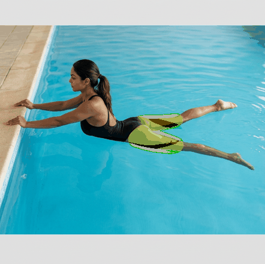
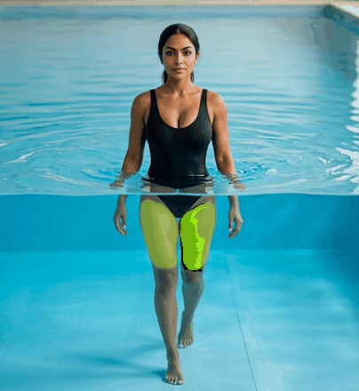
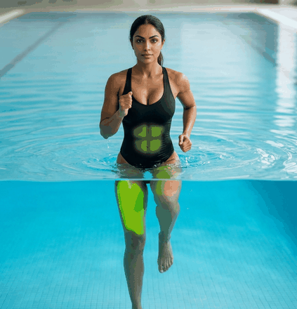
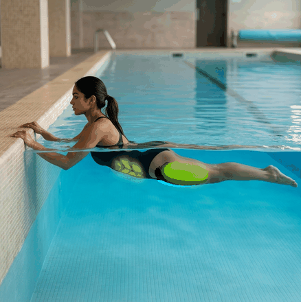
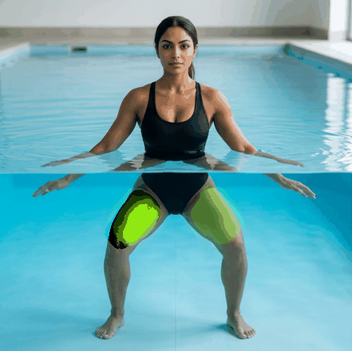
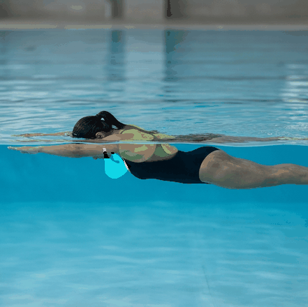
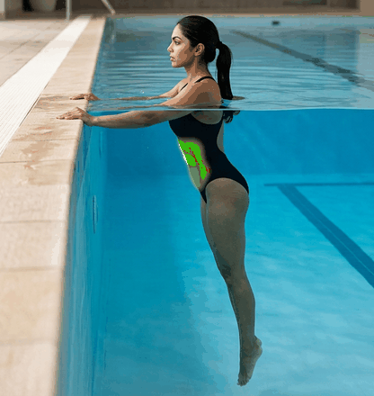
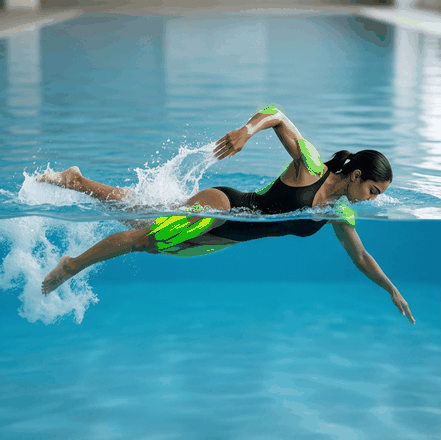
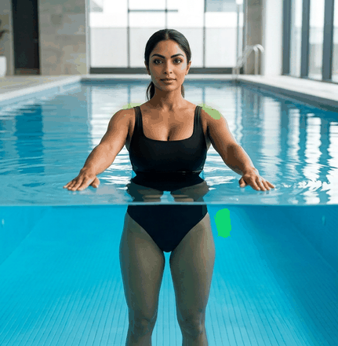
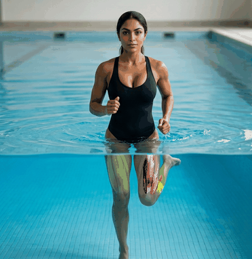

Aucun agrandissement : taille exacte du GIF livré. Seule la couleur verte change.
Aucun agrandissement. Chaque GIF reste à sa taille d'origine (442×440 en général, 2 images de 500 ms). Seule la zone verte est ramenée dans la famille du n°260 (saturation 0.914, teinte 86.1°), par correspondance de percentiles — la méthode du prototype 44 validé. 0 pixel modifié hors zone verte.
14 fichiers uniques pour 34 numéros : plusieurs numéros partagent le même GIF à l'octet près, ils sortent donc identiques et ne sont fabriqués qu'une fois. 6 numéros n'ont pas de vert du tout : il n'y a rien à y améliorer.
À regarder : teinte tirant vers le cyan : vérifier que c'est bien le muscle et non l'eau.
442×440 · 2 images de 500 ms · zone verte 1993 px · 203 ko → 173 ko

| avant | après | |
|---|---|---|
| saturation (260 = 0.914) | 0.425 | 0.918 |
| teinte (260 = 86.1°) | 124.9° | 98.2° |
| nuances conservées | 78 | 71 |
| couverture_peau | 0.728 | |
| debordement_vert | 0.0 | |
| manque_peau / vert_pâle / autre | 0.0 / 0.272 / 0.0 | |
| pixels modifiés hors zone | 0 | |
404×440 · 2 images de 500 ms · zone verte 1482 px · 150 ko → 140 ko

| avant | après | |
|---|---|---|
| saturation (260 = 0.914) | 0.613 | 0.917 |
| teinte (260 = 86.1°) | 80.0° | 82.8° |
| nuances conservées | 37 | 15 |
| couverture_peau | 0.918 | |
| debordement_vert | 0.0 | |
| manque_peau / vert_pâle / autre | 0.0 / 0.078 / 0.004 | |
| pixels modifiés hors zone | 0 | |
423×440 · 2 images de 500 ms · zone verte 2414 px · 168 ko → 154 ko

| avant | après | |
|---|---|---|
| saturation (260 = 0.914) | 0.591 | 0.918 |
| teinte (260 = 86.1°) | 96.2° | 82.6° |
| nuances conservées | 99 | 93 |
| couverture_peau | 1.0 | |
| debordement_vert | 0.0 | |
| manque_peau / vert_pâle / autre | 0.0 / 0.0 / 0.0 | |
| pixels modifiés hors zone | 0 | |
438×440 · 2 images de 500 ms · zone verte 1824 px · 183 ko → 168 ko

| avant | après | |
|---|---|---|
| saturation (260 = 0.914) | 0.58 | 0.918 |
| teinte (260 = 86.1°) | 83.1° | 84.8° |
| nuances conservées | 53 | 46 |
| couverture_peau | 0.814 | |
| debordement_vert | 0.0 | |
| manque_peau / vert_pâle / autre | 0.016 / 0.068 / 0.102 | |
| pixels modifiés hors zone | 0 | |
441×440 · 2 images de 500 ms · zone verte 3303 px · 151 ko → 139 ko

| avant | après | |
|---|---|---|
| saturation (260 = 0.914) | 0.497 | 0.918 |
| teinte (260 = 86.1°) | 87.0° | 86.3° |
| nuances conservées | 76 | 52 |
| couverture_peau | 0.936 | |
| debordement_vert | 0.0 | |
| manque_peau / vert_pâle / autre | 0.0 / 0.052 / 0.012 | |
| pixels modifiés hors zone | 0 | |
441×440 · 2 images de 500 ms · zone verte 938 px · 153 ko → 137 ko

| avant | après | |
|---|---|---|
| saturation (260 = 0.914) | 0.513 | 0.918 |
| teinte (260 = 86.1°) | 100.3° | 93.4° |
| nuances conservées | 62 | 43 |
| couverture_peau | 1.0 | |
| debordement_vert | 0.0 | |
| manque_peau / vert_pâle / autre | 0.0 / 0.0 / 0.0 | |
| pixels modifiés hors zone | 0 | |
À regarder : teinte tirant vers le cyan : vérifier que c'est bien le muscle et non l'eau.
416×440 · 2 images de 500 ms · zone verte 643 px · 165 ko → 145 ko

| avant | après | |
|---|---|---|
| saturation (260 = 0.914) | 0.277 | 0.918 |
| teinte (260 = 86.1°) | 125.0° | 105.6° |
| nuances conservées | 66 | 64 |
| couverture_peau | 0.896 | |
| debordement_vert | 0.0 | |
| manque_peau / vert_pâle / autre | 0.054 / 0.048 / 0.002 | |
| pixels modifiés hors zone | 0 | |
À regarder : teinte très éloignée du vert muscle (260 = 86°) : ce que l'on mesure est probablement l'eau du bassin, pas un muscle. À regarder avant d'accepter.
441×440 · 2 images de 500 ms · zone verte 1221 px · 168 ko → 156 ko

| avant | après | |
|---|---|---|
| saturation (260 = 0.914) | 0.526 | 0.917 |
| teinte (260 = 86.1°) | 147.5° | 116.5° |
| nuances conservées | 76 | 73 |
| couverture_peau | 0.998 | |
| debordement_vert | 0.0 | |
| manque_peau / vert_pâle / autre | 0.0 / 0.002 / 0.0 | |
| pixels modifiés hors zone | 0 | |
À regarder : teinte très éloignée du vert muscle (260 = 86°) : ce que l'on mesure est probablement l'eau du bassin, pas un muscle. À regarder avant d'accepter.
431×440 · 2 images de 500 ms · zone verte 619 px · 187 ko → 173 ko

| avant | après | |
|---|---|---|
| saturation (260 = 0.914) | 0.84 | 0.764 |
| teinte (260 = 86.1°) | 164.7° | 96.0° |
| nuances conservées | 26 | 25 |
| couverture_peau | 1.0 | |
| debordement_vert | 0.0 | |
| manque_peau / vert_pâle / autre | 0.0 / 0.0 / 0.0 | |
| pixels modifiés hors zone | 0 | |
À regarder : teinte tirant vers le cyan : vérifier que c'est bien le muscle et non l'eau.
428×440 · 2 images de 500 ms · zone verte 1607 px · 173 ko → 154 ko

| avant | après | |
|---|---|---|
| saturation (260 = 0.914) | 0.259 | 0.916 |
| teinte (260 = 86.1°) | 122.5° | 104.2° |
| nuances conservées | 67 | 55 |
| couverture_peau | 0.981 | |
| debordement_vert | 0.0 | |
| manque_peau / vert_pâle / autre | 0.016 / 0.0 / 0.003 | |
| pixels modifiés hors zone | 0 | |